Welcome to Malia's Boards Page
My objectives for the Robotics and Embedded System major are:
- Design and complete robotic and embedded systems solutions that apply to real-world situations and challenges.
I picked my final from C++ and 7 segment display. The game takes user inputs and changes the dialogue options based on the user’s input. The seven-segment display takes the user inputs on button changes it to binary and can display what the user wants.https://github.com/Wolfpanda01/Final-for-c
 7 segment display code 7 segment display
7 segment display code 7 segment display
- Implement a simple microprocessor using digital logic design.
- Demonstrate embedded system design skills, including, but not limited to, microcontroller selection, schematic design, printed circuit board layout, design for electromagnetic compatibility and design for manufacturing.
- Apply knowledge of transducers, actuators and simultaneous hardware and software development in the design of an embedded system.
- Design and analyze real-time embedded systems, including advanced digital logic design, signal processing and highspeed digital systems.
- Implement and evaluate algorithms and methods enabling autonomy in a mobile robot.
I picked my M5stickCplus project and the 4-bit adder project.
The Firebase project uses user input and control over a led with an on/off system.
The 4-bit adder project is a project that takes the users input and gives them what the binary number is remaining.
firebase video
Firebaselight code
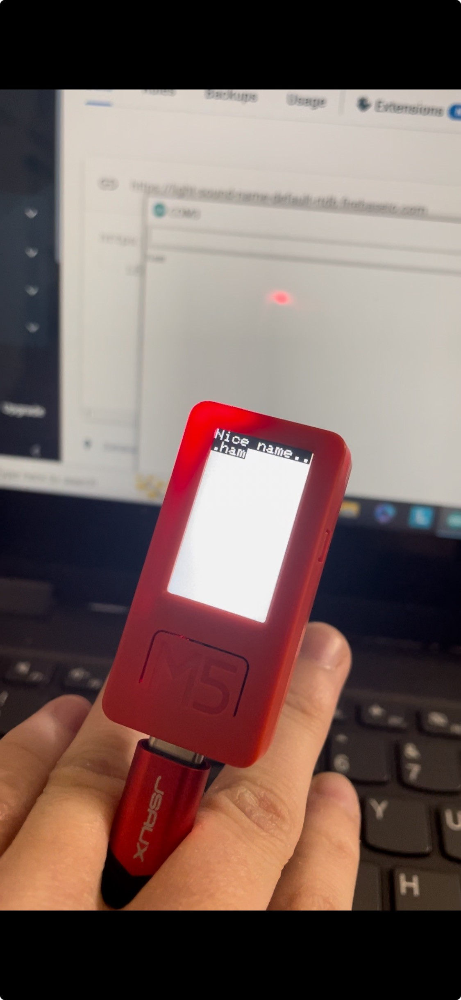
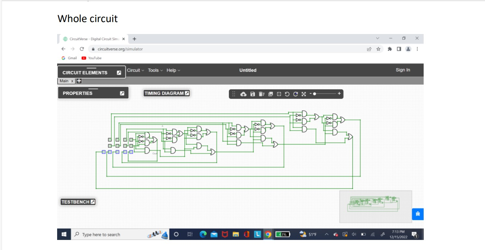
4-bit adder
I picked the chained led project and perfboard assignment. I picked a clean schematic that is easy to be copied.The LED circuit is able to hold up to seven leds to show how the blue LED disable to have less amperage. With this it's able to control multiple LEDs. Another works based on how the blue LED works with it lower abilities compared to the previous Other types of colored LED.
The perfboard show how I can make a simple circuit in a very small section of a perfboard.Perfboard shows the simple layout design on the simple circuit that is to turn on an LED. This demonstrates the ability to create a simple layout on a board with soldering and techniques. So demonstrates that I have the ability to make a circuit board within a small area.

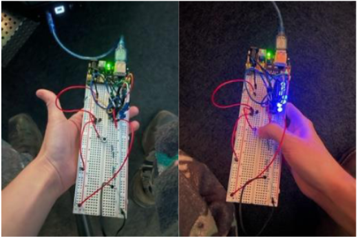
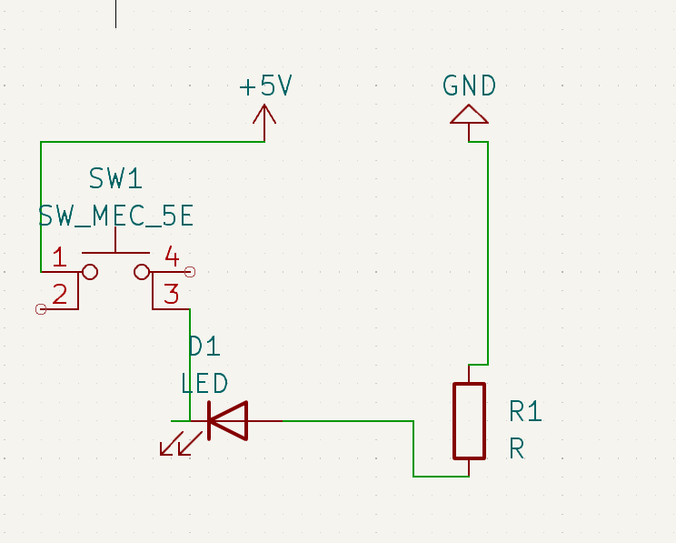
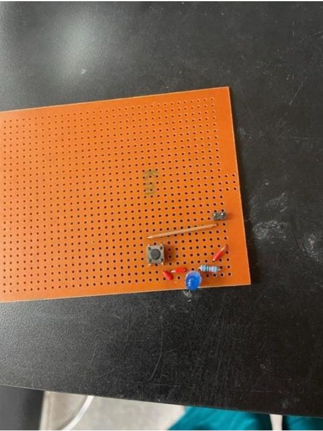
I picked the boar walking project and IR senser.
The IR sensor adds different button presses till the correct code it input in.If the input is insert it incorrectly the serial monitor will tell them that they have messed up and to try again. If the code is correctly inputted in the natural tell them that you did not mess up each of the numbers on the remote have a number output that represents them for example one being 17. With this the user has to correctly input the code to get up to a certain number set by the code which in this case is 255.
For walks is due to the different angles that the servos have been programmed to hit which mimic an actual boars’ walking. These angles are calculated to work together to create a simulation that allows for a robot in theory to walk with one side boar 1 front leg one back leg. First the front leg moves and then the back leg moves right afterwards and a right neck motion that mimics the ability to walk.

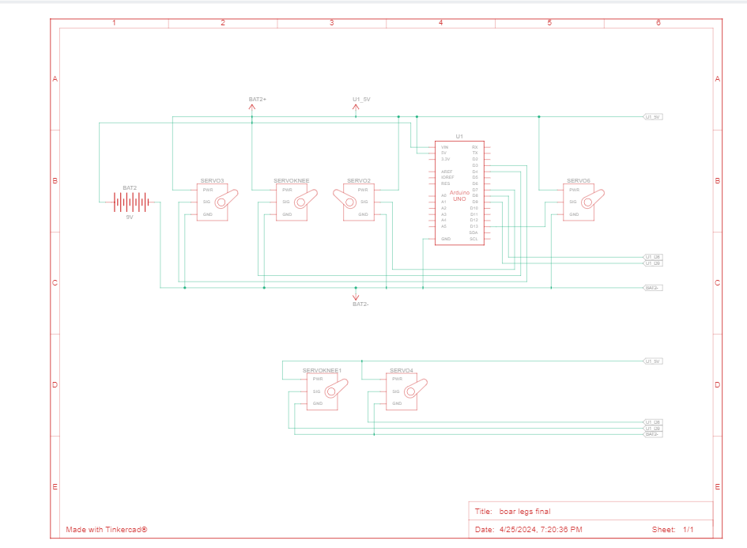
Boar legs code
Boar legs servos
IR senser

I picked my motor control and 7 segment display.
The 7 seven segment display uses Arduino code to process button presses into binary and changes it to a number or letter depending on the bit.The seven segment display takes in four button inputs. depending on the button input the code changes which number slash letter is displayed. For example, if button two and three are push down then it may read a C. The same premise works with the numbers it all is based on the binary code which is calculated based on button presses.Motor controller is 2 motors that are controlled by a switch to one motor play at one point and then the other one to switch on when the switch is rotate. First the top motor runs in a clockwise position until the switch rotated causing it to stop and for the other motor to start.
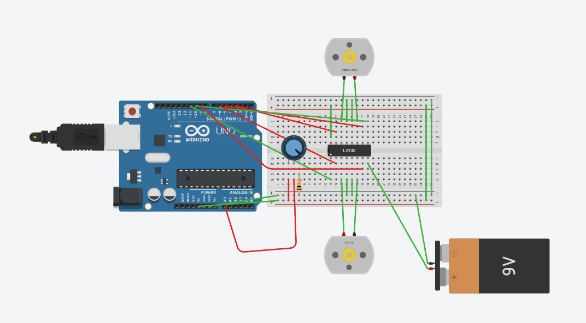
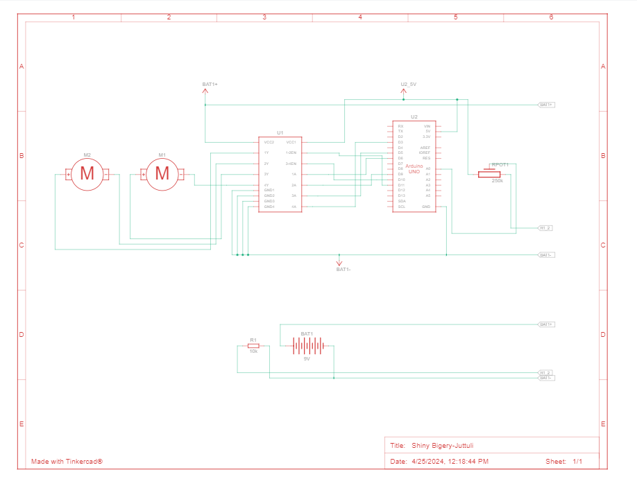
motor drive
motor drive video
I put my boar project and wheel encoder project.
The wheel encoder drive a robot around in a simple way with directions given in the code.
The boar project is a project were servo control the angle of the boars’ legs to enable a boar robot to walk.


My objectives for the 3D maker and Fabrication major are:
- Demonstrate the ability to prototype, build, and apply for patents for technology products meeting specific human factors, forms and function criteria
I picked a book holder and model stand.These were two project that met my client’s expectations and were prototyped multiple times.They both are extremely function and when though different test.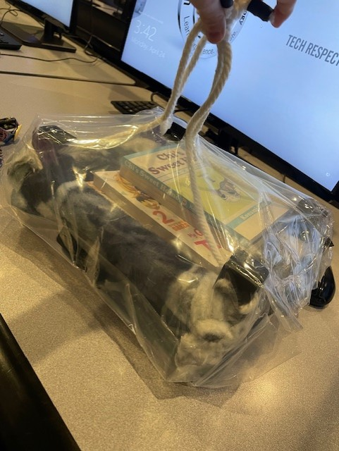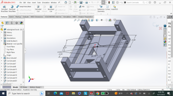Water Test
 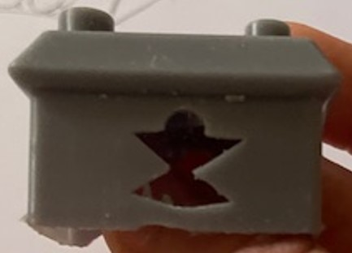
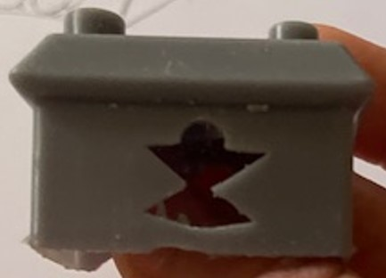 - Demonstrate the ability to evaluate trends in design principles and apply them into the form and function of devices
- Demonstrate the ability to evaluate material and build technique options during the creation of products and their prototypes
- Demonstrate the ability to evaluate and implement developments within electromechanical,algrithmic,robotic, microprocessor, sensor and other advancing technology areas while making product design decisions
- Demonstrate the ability to work within a maker studio environment to design, build, test and revise products that neet client timeline, design and quality requirements
- Demonstrate proficiency with industry accepted prototyping, modeling, build and maker tool and techniques
I picked a brace and prototype of the book holder.
For the book holder, I used triangles and poles as a way to save on materials and keep strength.
The trend I followed for the brace was the ability to wear an object in a brace form with a tying mechanism.
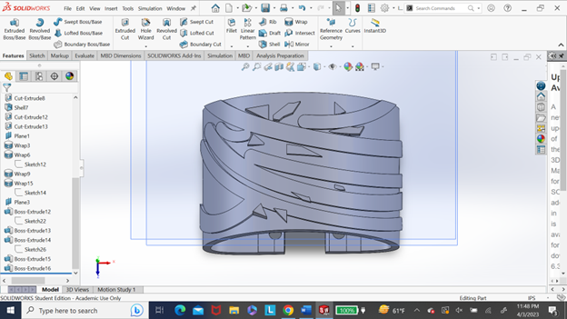
//need phyacal part
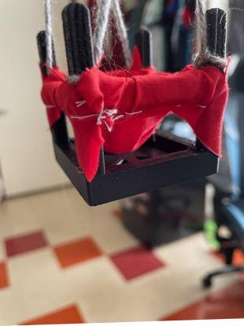
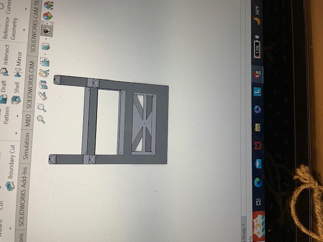
I picked two materials I’ve tested.


These were in a test showing the strength of different materials that could be used in the lining of a game console game case.
In the case face PLA was the winner in the test proving its durability.
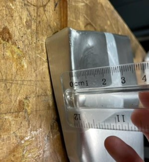
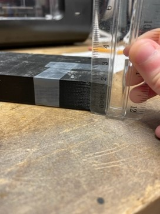
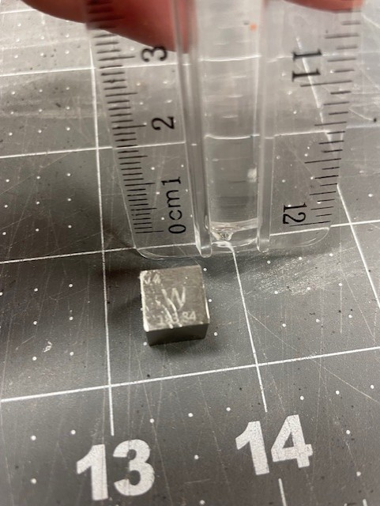
//need another example
I picked a model stand that can have LEDs put under it and my M5stickplus case.
The M5stickplus case was made to hold the tiny microprocessor safely.
The model stand was made for displaying models with LEDs under to light from the bottom.
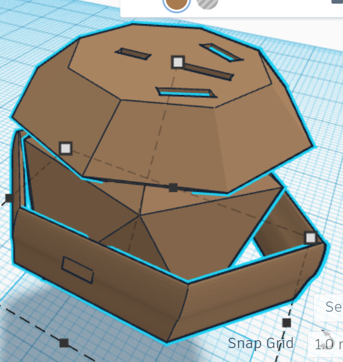
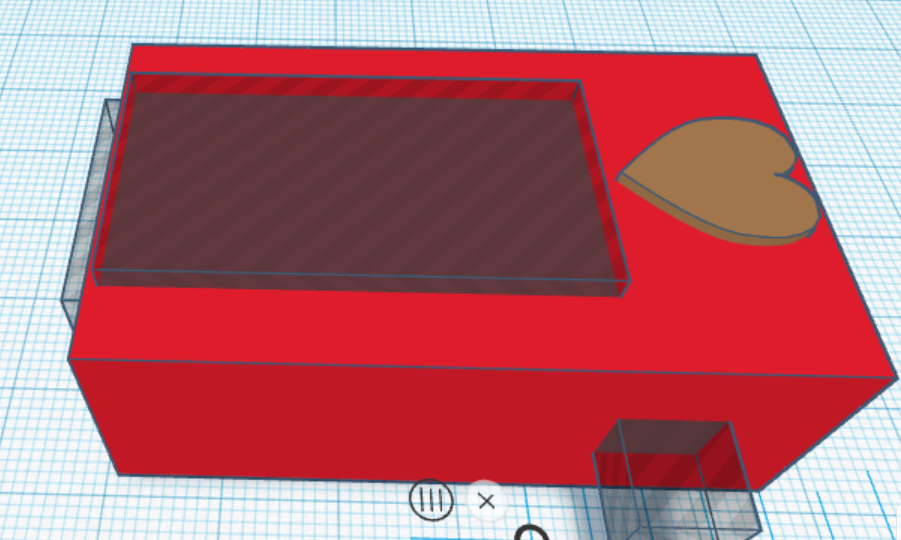
//need phyacal parts
I picked my drone and an old part of murphy.
I made both of those using the maker’s space equipment and resources.
The murphy part was a test of making a parts holder that worked with our needs.
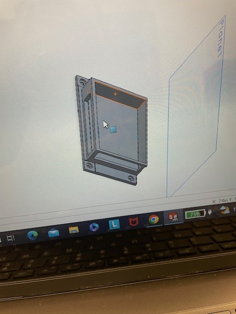
https://github.com/Wolfpanda01/drone-web-page
I picked the model stand and the model of the book holder.
I picked this two because they show that have the ability to use different software to model parts.
That is mostly shown in the book holder model.